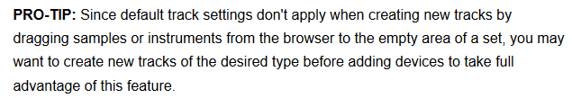

- filter1 -> 4x high-pass @ 30 Hz
- filter 3 -> steep notch @ 250 Hz (deactivated!)
- filter 7 -> high-shelf
- filter 8 -> low-pass @ 22 kHz (deactivated!)
- filters 2, 4, 5, 6 - leave as unmodified bell curves
- turn on
over-sampling / hi-qulity(right-click title bar) save as default preset(right-click title bar)
Overview
- wave-shape -> sinoid fold
- turn on
hi-quality(right-click title bar) save as default preset(right-click title bar)Overview
audio
- create
audio track - value ->
-7.dB add fx ->
saturator+eq8(disable both!)NOTE: Heavy on cpu; only really needed at `mixdown` stage.save as default AUDIO track(right-click track)
- create
midi
- create
midi track - value ->
-7.dB - via audio track above, copy over disabled fx ->
eq8+saturator save as default MIDI track(right-click track)
 setup 
setup - create
via audio track above, add fx
- dynamic tube - saturator - glue compressor - eq8setup hit rack’s
savebutton (e.g.My-Mixing-Rack-2018)